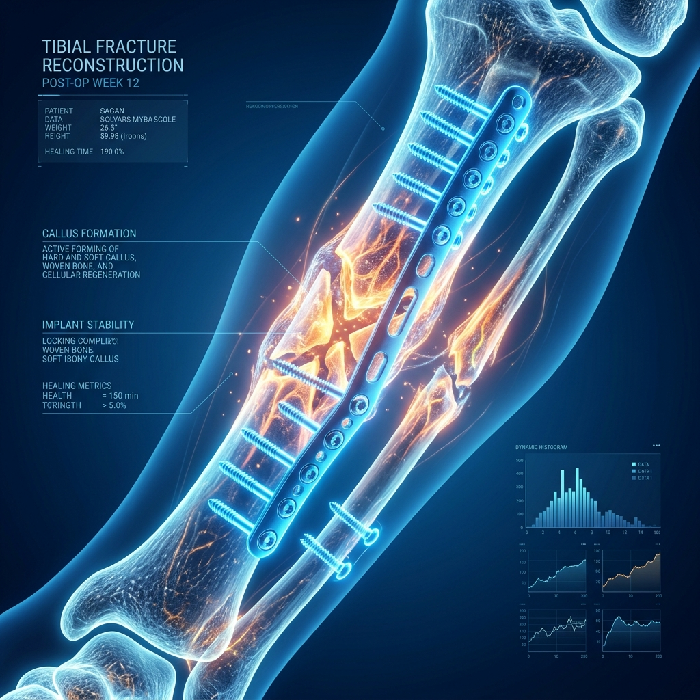

Advanced Fracture Treatment
Regain Your Mobility with Pinpoint Precision.
From simple casts to complex titanium surgical fixation, we ensure your bones heal with absolute precision, perfect alignment, and maximum strength.
Consult a Specialist Today
+2K
Successful
Procedures

Procedures

98%
Patient Satisfaction
Why Choose Our Fracture Treatment?
Our state-of-the-art medical technology allows for sub-millimeter accuracy, ensuring the best clinical outcomes.
Perfect Alignment
3D mapping ensures absolute precision, extending the lifespan of the treatment.
Faster Recovery
Minimally invasive techniques mean less tissue damage, allowing you to walk sooner.
Natural Feel
Customized positioning respects your anatomy, providing a more natural joint movement.
Reduced Pain
Less disruption to surrounding muscles and tissues significantly decreases post-operative pain.
Your Journey to Mobility
A clear, clinical pathway designed for your comfort and absolute success. We guide you through every step.